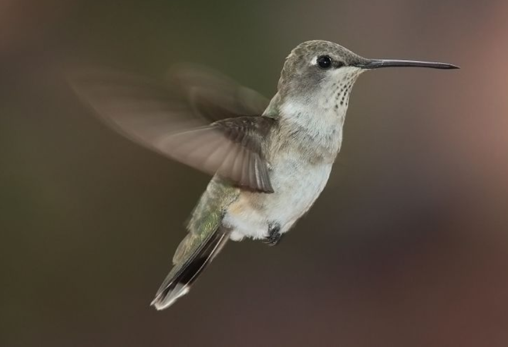

(백엔드 애들이 받아올 사용자 아이디)님 로그아웃

· 이름 : 벌새(Hummingbird)
· 수명 : 3~5년
· 크기 : 6.5~21.5cm
· 먹이 : 곤충, 꿀
· 서식지 : 열대 지방
· 부연 설명 : 생물 역사상 가장 작은 조류이다.
날개짓 속도가 매우 빨라서 날고 있을 때 소리를 들으면 벌과 같은 소리가 나서 벌새라고 불린다.
짧은 다리와 약한 발가락을 대신 해서 날개가 다른 새보다 몇 배로 튼튼하다.
· 수명 : 3~5년
· 크기 : 6.5~21.5cm
· 먹이 : 곤충, 꿀
· 서식지 : 열대 지방
· 부연 설명 : 생물 역사상 가장 작은 조류이다.
날개짓 속도가 매우 빨라서 날고 있을 때 소리를 들으면 벌과 같은 소리가 나서 벌새라고 불린다.
짧은 다리와 약한 발가락을 대신 해서 날개가 다른 새보다 몇 배로 튼튼하다.